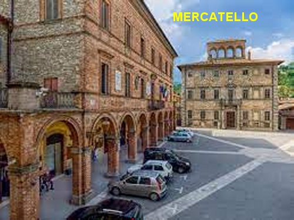
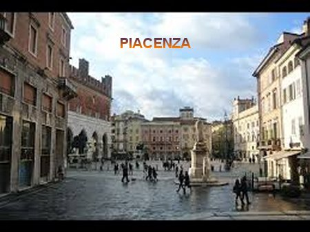
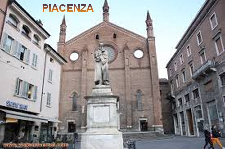

“SEU NOME ANTECIPOU SUA VOCAÇÃO”

SEUS PAIS
A Menina nasceu no dia 27 de Dezembro de 1660, em Mercatello, no Vale do Metauro, na Itália, data em que se festeja o dia do Discípulo fiel de JESUS, São João Evangelista; era filha de Francesco Giuliani e Benedetta Mancini, e foi a última das sete filhas do casal, das quais outras três abraçaram a vida monástica. No dia seguinte, dia 28 de Dezembro, Festa dos Santos Inocentes, foi levada a Pia Batismal, na Igreja Colegial de São Pedro e São Paulo, onde recebeu o Batismo pelo Pároco Dom João Antonio Borghese, e também o nome de “Úrsula”,que significa que ela viria a ser uma Virgem Santa Mestra Guia de outras Virgens Santas semelhantes, como de fato, anos mais tarde veio a acontecer. E na sequência dos anos, a Menina revelou um gênio tranquilo, sempre alegre, sem incomodar ninguém, deixando ser tratada sem lamentos, amamentando-se somente quando a sua mãe permitia. E revelou também uma particularidade muito importante em relação a tudo que se referia ou que representava o nosso DEUS, através de todas as imagens do SENHOR, as imagens de NOSSA SENHORA e dos Santos; diante delas assumia uma fisionomia seria e amorosa, inclinando-se num cumprimento respeitoso e gentil. Era sempre assim.
O SEU ALTAR
(Estes fatos foram revelados por suas irmãs, que ao longo dos anos não a perdia de vista, e também pelo senhor Cônego Ambroni de Mercatello, que foi o primeiro Confessor de Úrsula).
Com o passar dos anos, Úrsula perdeu duas das suas irmãs, em face de ter surgido uma abominável epidemia que na época, ainda não existia tratamentos específicos para combater a doença. No pequeno Altar, ela rezava com frequência pedindo a proteção de NOSSA SENHORA e do MENINO JESUS para as duas irmãs falecidas.

FALECIMENTO DE SUA MÃE
Quando tinha sete anos de idade a senhora sua mãe também adoeceu seriamente; todavia, a piedosa mulher, sabendo da gravidade da doença, antes de morrer, chamou as cinco filhas ao seu leito, e lhes deu preciosos conselhos; assim que concluiu suas palavras, rezou e suplicou ao SENHOR DEUS, encomendando cada uma delas a uma das Cinco Sagradas Chagas de JESUS Crucificado (as Chagas dos dois Pés, as Chagas duas Mãos e a Chaga do Lado). Coube a Úrsula, a “Chaga do DIVINO Lado de JESUS”,que então, a partir dessa época, aquela Chaga foi o objeto do seu mais terno e fervoroso amor. Ela ficou muito triste com a morte da mãe, pois era ela quem estava sempre ao seu lado e lhe ensinou a rezar e revelava muita ternura. E por fim, no entardecer desse mesmo dia, depois de juntas mãe e filhas rezarem três Ave Maria, a mãe partiu para a eternidade.
CARIDADE INFANTIL
Em todas as oportunidades Úrsula, apesar da sua pouca idade, sempre revelou uma caridade consciente e simpática, que com certeza tinha origem em seu bom coração. Às vezes na rua defronte a casa de seus pais, observando mendigos pedindo esmolas, ela corria arranjava qualquer alimento com a cozinheira e levava no pratinho para oferecer ao mendigo. Rapidamente o homem aceitava e comia com sofreguidão. Em outra oportunidade, ela viu uma menina pobre pedindo esmolas e com a roupa toda rasgada. Úrsula tinha um aventalzinho que a mãe havia feito para ela; levou-o e ofereceu a menina para colocar na frente da saia que estava muito rasgada. A menina aceitou e ficou ótimo.
EXCELENTE TRABALHO PARA O PAI

O pai Francesco continuava firme em seu trabalho, mas sempre procurando algo melhor. Certo dia diante de uma bela proposta comercial decidiu se transferir para Piacenza, a fim de ocupar o cargo de Superintendente das Alfândegas do Ducado de Parma. Úrsula e as outras irmãs ficaram em Mercatello, aos cuidados de um tio, irmão do pai, que lhes davam toda assistência necessária.
Úrsula que era a mais piedosa das irmãs continuou frequentando a Igreja com muita dedicação e participando interessadamente da preparação dos jovens para receberem o Sacramento da Crisma. Quando ela completou a idade de sete anos e estando devidamente preparada, recebeu a Crisma na mesma Igreja em que foi Batizada, sendo Ministrado o Sacramento por Monsenhor Honorato, que era o Bispo Diocesano. Uma observação importante foi confirmada no seu Processo de Canonização pela Irmã Florida Cevoli, Monja Capuchinha e também, pelas irmãs de Úrsula que estavam presentes a cerimônia: a madrinha e suas irmãs viram o Anjo da Guarda de Úrsula ao seu lado, no momento em que foi Crismada, dando-lhe uma natural assistência.

CARINHOS DIVINOS
Ainda na mesma idade de sete para oito anos, a jovem Úrsula teve outras experiências de visões notáveis, que zelosamente guardou em seu coração. Ela descreve em suas memórias, que nessa idade JESUS lhe apareceu duas vezes todo chagado, durante a Semana Santa e lhe disse: “Seja devota da Minha Sagrada Paixão”; e subitamente desapareceu. Disse a jovem: “Chorei muito, e cada vez que ouvia alguém dizer alguma coisa a respeito das dores e sofrimentos do SENHOR, sentia meu coração apertar de dor e um pulsar muito forte; tudo o que eu fazia era com a finalidade de honrar a Paixão de NOSSO SENHOR. E foi assim que até me mortifiquei algumas vezes, mas compreendi que naquela idade, esse não era o caminho correto, que mais agradava a JESUS”.
MUDANÇA PARA PIACENZA

Úrsula ainda não havia completado oito anos de idade quando seu pai alcançou em Piacenza o alto posto de Intendente das Finanças, e então, fez vir toda a família para a junto dele. Nesta cidade Úrsula continuou em companhia das irmãs cultivando devotos exercícios espirituais, e dando tantas mostras de sua rara virtude, que tendo apenas nove anos de idade, foi considerada digna de receber a Primeira Comunhão Eucarística. E verdadeiramente ela se preparou fervorosamente a fim de estar em perfeitas condições espirituais para receber JESUS.
Sua existência continuou cultivando uma vida de oração. Ela dizia: “Cada vez mais buscava pelas minhas próprias maneiras, um modo melhor e mais concreto de agradar ao SENHOR. O quanto eu sofri, só DEUS sabe”. Ela menciona o seu sofrimento referindo-se às repugnâncias indizíveis, as penosas, as tentações, as obscuridades da mente, as quais, ela ia vencendo com santa perseverança e muitas orações, todas as espécies de obstáculos.
LEMBRAVA SEMPRE DOS SOFRIMENTOS DE JESUS
Com 14 anos de idade Úrsula dizia: “Quanto mais eu perseverava na oração mais ânsia tinha de sofrer” (ela se lembrava de todos os sofrimentos de JESUS);“e como o Confessor não queria me conceder penitências, eu não sabia o que havia de fazer. Mas de tanto pedir, ele finalmente concedeu-me o cilício por três dias na semana”. Era pouco para Úrsula, mas ela cumpria com exatidão. Depois ela contou: “Quando chegava o dia da Comunhão, na Santa Missa, não cabia em mim de tão grande alegria”.